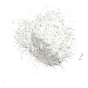
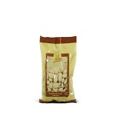
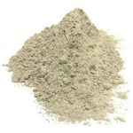
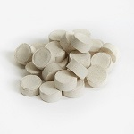
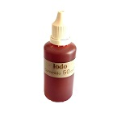
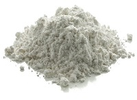
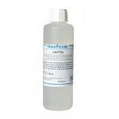

Insumos
Azúcares, adjuntos y aditivos
AzÚcar de maÍz (dextrosa)
Se utiliza para lograr una perfecta carbonatación de la cerveza, agregar 7gr/lt de cerveza. Presentación: Bolsa de 1 kg. Dato: Agregando azúcar cervecera se puede aumentar el grado alcohólico de tu cerveza. La cantidad es de 20 gr/L para aumentar 1 grado alcohólico/L.
Pastillas carbonatadoras
Diseñado para lograr una excelente carbonatación en botella. Agregado: 2 pastillas para bot. de 330ml, 3 pastillas para bot. de 660ml, 4 pastillas para bot. de 1L. Prensentación: Paquete de 250grs.
Irish moss
Clarificante para ser agregado al mosto en el momento del hervor, ayuda a aumentar la coagulación de proteínas y a la formación del turbio caliente. Se debe agregar diluidoen agua fría cuando resten 10 minutos para que finalice la hora de hervor. Dosaje: una cuchara de te cada 20 lts de mosto. Presentación: Bolsa de 100 grs y bolsa de 1 kg.
Whirflock
Clarificante de mosto, k-carrageenan de alto peso molecular y proviene de alga marina roja: Rhodophyceae. Presentación: Bolsa de 100 grs y bolsa de 1 kg.
Solución de yodo
Utilizada para determinar cuando esta concluida la conversión de almidón en el momento de la maceración. Presentación: Frasco de 50 ml.
Ácido cítrico
Grado alimenticio, para regular el ph de maceración, granulado. Presentación: Bolsa de 100grs y bolsa de 1 kg.
Ácido láctico
Grado alimenticio, para regular el ph de maceración, líquido. Presentación: Frasco de 250 ml.
Gypsum
Acondicionamiento del agua para la elaboración de algunos estilos de cerveza: Stout, ipa. Presentación: Bolsa de 100 grs y bolsa de 1 kg.